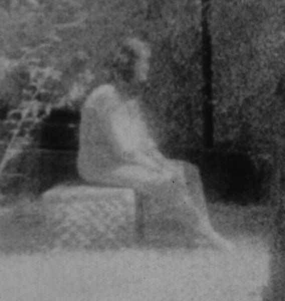

Wonder what's with Ghosts?
We don't know a lot about ghosts. In fact, a number of the ghost facts you can find online discuss how a ghost is feeling, why they do what they do, and what they enjoy. No one knows this for sure. Here are some facts we do know for sure.
* Ghosts can interact with their environment, moving objects, manifesting in areas, making sounds, or even speaking and conversing at low decibel levels.
* Spirits can also appear on film and video. Their manifestations can be recorded via either film or digital imagery techniques, but clear photos and videos are hard to capture. People will rarely see ghosts outside of pictures and video.
* All they generally want is attention, and ghosts rarely cause harm to a person. Recorded attacks against a living human do exist, but most ghosts interact with the surrounding environment to get out attention and avoid violent actions.
* A ghost tends to change the temperature of a room, making it colder, and rarely, hotter, than it was. This is used by ghost hunters to identify when a ghost has entered a room. It is not known whether this is a natural reaction to their presence, or if they just want to feel more comfortable.
* Ghosts can be tracked using and EMF meter, a detector used to measure electric fields.
* Want to speak with a ghost. Ask questions using a digital recorder. They often answer at low decibel levels, which you can hear during a playback at higher volumes. These are known as EPVs.